청소년상담사-3급(2교시) (2021-10-09 기출문제)
1과목: 학습이론
1. 파블로프(I. Pavlov)의 이론에서 근접성의 원리에 따라 강한 조건형성이 일어나는 것은?
- 무조건 자극과 조건 자극을 동시에 제시하였다.
- 무조건 자극을 먼저 제시하면서 0.5초 이내로 조건자극도 제시하였다.
- 조건 자극을 먼저 제시하면서 0.5초 이내로 무조건 자극을 제시한 후 두 자극을 동시에 철회하였다.
- 조건 자극을 먼저 제시하였다가 철회하고 나서 2초 후에 무조건 자극을 제시하였다.
- 조건 자극을 먼저 제시하였다가 철회하고 나서 5초 후에 무조건 자극을 제시하였다.
(정답률: 알수없음)

2. 학습의 개념에 관한 설명으로 옳은 것은?
- 태도 변화는 학습의 범주에서 제외한다.
- 정서적 변화는 학습의 범주에 포함하지 않는다.
- 성숙에 의한 행동 변화는 학습의 범주에 포함하지 않는다.
- 학습(learning)과 수행(performance)은 직접적으로 관찰 가능하다.
- 약물에 의한 일시적 신체 상태에 기인한 행동 잠재력의 변화도 학습의 범주에 포함한다.
(정답률: 알수없음)
3. 인간주의(humanistic theory) 학습동기이론에 관한 설명으로 옳은 것은?
- 매슬로우(A. Maslow)의 욕구 위계에서 자아존중에 대한 욕구는 결핍 욕구에 해당한다.
- 결핍 욕구는 그 욕구에 대한 개인의 주관적 만족감에 의해 충족되므로 해소되지 않는다.
- 성장 욕구는 성장에 대한 개인적 욕구에 의해 동기화되며, 목표수준에 도달하면 충족된다.
- 소속과 애정의 욕구는 성장 욕구에 해당한다.
- 로저스(C. Rogers)는 실현경향성(actualizing tendency)을 후천적인 것으로 보았다.
(정답률: 알수없음)
4. 동기에 관한 다음 공식에 해당하는 설명을 ＜보기＞에서 모두 고른 것은?
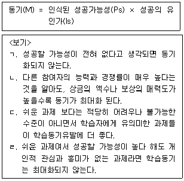
- ㄱ, ㄴ
- ㄱ, ㄹ
- ㄷ, ㄹ
- ㄱ, ㄴ, ㄷ
- ㄱ, ㄷ, ㄹ
(정답률: 알수없음)
5. 라이언과 데시(R. Ryan & E. Deci)의 자기결정성 이론(self-determination theory)에 관한 설명으로 옳은 것은?
- 인간은 후천적으로 유능감(competence), 관계성(relatedness), 자율성(autonomy)에 대한 욕구를 가진다.
- 내적 동기는 사회화 과정에서 주어지는 통제, 보상 등에 의해 내면화되어 점차 자기조절과정의 일부가 된다.
- 무동기(amotivation)는 적정 수준의 동기 상태이다.
- 통합된 조절(integrated regulation)보다 내적 조절(intrinsic regulation)의 자율성 정도가 더 높다.
- 외적 동기와 내적 동기는 상호 대립개념이다.
(정답률: 알수없음)
6. 다음 중 '숙달목표(mastery goal)'지향 학습자에게서 나타날 수 있는 특성을 모두 고른 것은?
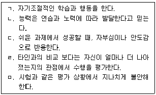
- ㄱ, ㄴ, ㄷ
- ㄱ, ㄴ, ㄹ
- ㄱ, ㄷ, ㄹ
- ㄴ, ㄷ, ㅁ
- ㄴ, ㄹ, ㅁ
(정답률: 알수없음)
7. 스키너(B. Skinner)이론의 주요 개념에 관한 설명으로 옳은 것을 모두 고른 것은?
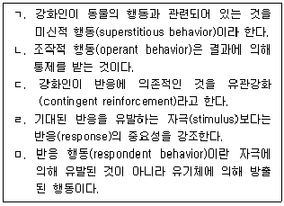
- ㄱ, ㄴ, ㄷ
- ㄱ, ㄷ, ㄹ
- ㄴ, ㄷ, ㄹ
- ㄴ, ㄷ, ㅁ
- ㄷ, ㄹ, ㅁ
(정답률: 알수없음)
8. 다음 내용에 해당되는 개념은?
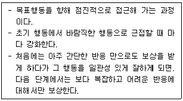
- 조형(shaping)
- 연쇄(chaining)
- 유관계약(contingency contract)
- 변별(discrimination)
- 체계적 둔감화(systematic desensitization)
(정답률: 알수없음)
9. 관찰학습 과정의 'ㄱ' 에 관한 설명으로 옳은 것은?
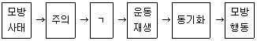
- '이렇게 하면 잘 될거야', '팔을 왼쪽으로 더 뻗어야 해' 와 같이 정보적 피드백에 근거한 자기수정적 조정이 필수적이다.
- 관찰된 정보를 심상적, 언어적 표상체계로 부호화한다.
- 모델의 특성에 따라 관찰자의 주의집중이 달라진다.
- 모델이 보상받는 것을 관찰하면 강한 자극제가 될 수 있다.
- 환경을 자기 인도적(self-directed)으로 탐색한다.
(정답률: 알수없음)
10. 학습 상황에서의 전이(transfer)에 관한 설명으로 옳은 것은?
- 근접 전이(near transfer): 학습활동시의 맥락과 전이 상황의 맥락이 유사할 때 일어난다.
- 부적 전이(negative transfer): 선행학습과 후속 학습간의 구체적 특수요인에 의해서만 전이가 일어난다.
- 도해적 전이(figural transfer): 원래대로의 기능 또는 지식을 새로운 과제에 적용할 때 일어난다.
- 축어적 전이(literal transfer): 새로운 학습에 직면하여 자신이 이전에 숙달학습을 위해 사용했던 것과 동일한 학습전략을 사용할 때 일어난다.
- 원격 전이(far transfer): 선행학습이 후행학습을 더 어렵게 만들 때 일어난다.
(정답률: 알수없음)
11. 다음 각 사례와 사회인지 학습이론의 개념을 바르게 연결한 것은?
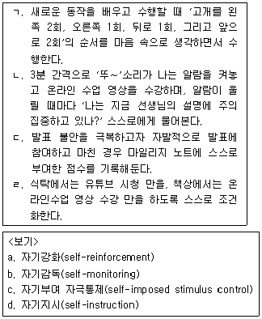
- ㄱ - a, ㄴ - b, ㄷ - c, ㄹ – d
- ㄱ - a, ㄴ - b, ㄷ - d, ㄹ – c
- ㄱ - b, ㄴ - d, ㄷ - c, ㄹ – a
- ㄱ - d, ㄴ - b, ㄷ - a, ㄹ – c
- ㄱ - d, ㄴ - b, ㄷ - c, ㄹ - a
(정답률: 알수없음)
12. 기억술(mnemonics)과 그 사례의 연결이 옳은 것은?
- 운율법(rhyming method): gloom (어둠)은 구름이 끼어 어두움
- 두문자어법(acronyms): 수금지화목토천해 (태양으로부터의 순서대로 행성 이름 외우기)
- 장소법(loci method): 한번 구경 오십시오 (한라산 해발 1,950미터)
- 연상법(mental imaging): HOMES(5대호: Huron, Ontario, Michigan, Erie, Superior)
- 핵심단어법(keyword method): 현관 - 사과, 거실 - 감자, 침실 - 배추 (익숙한 장면과 동선의 순서에 따라 단어 배치하기)
(정답률: 알수없음)
13. 뉴런과 그 연결망에 관한 설명으로 옳지 않은 것은?
- 학습과정은 새로운 신경 연결을 형성하는 것과 관련 있다.
- 뉴런(neuron)은 신경계 내의 전기 신호를 통해 정보를 처리하는 신경세포이다.
- 시냅스(synapse)는 과다분비된 신경전달물질을 없애 주는 청소부 역할을 한다.
- 축색돌기(axon)는 다른 뉴런으로 정보를 전달하는 역할을 한다.
- 수상돌기(dendrites)는 다른 뉴런으로부터 정보를 받아들이는 역할을 한다.
(정답률: 알수없음)
14. 시험실패에 대한 귀인과 와이너(B. Weiner)가 제시한 귀인의 세 가지 차원의 연결이 옳은 것을 모두 고른 것은?
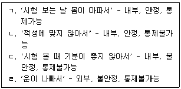
- ㄱ, ㄴ
- ㄴ, ㄷ
- ㄷ, ㄹ
- ㄱ, ㄴ, ㄷ
- ㄴ, ㄷ, ㄹ
(정답률: 알수없음)
15. 망각에 관한 설명으로 옳지 않은 것은?
- 쇠퇴(decay)이론에 따르면, 기억 흔적이 점차 사라지기 때문에 망각이 일어난다.
- 간섭(interference)이론에 따르면, 정보가 다른 정보와 섞이거나 다른 정보에 의해 대체되기 때문에 망각이 일어난다.
- 쇠퇴 이론이 간섭 이론에 비해서 망각의 원인을 더 잘 설명한다.
- 알파벳 'd'를 배우게 되면서, 앞서 배웠던 'b'를 혼동하는 것은 역행간섭의 예이다.
- 개명한 친구의 새 이름이 기억나지 않고 예전 이름만 떠오르는 것은 순행간섭의 예이다.
(정답률: 알수없음)
16. 다음에 해당하는 행동수정의 개념은?
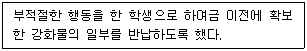
- 정적 강화
- 반응 대가
- 부적 강화
- 소거
- 수여성 벌
(정답률: 알수없음)
17. 기억에 관한 설명으로 옳지 않은 것은?
- 앳킨슨-쉬프린(Atkinson-Shiffrin)의 기억모형은 감각등록기, 단기기억, 그리고 장기기억 간의 체계를 설명한다.
- 감각등록기(sensory register)는 외부로부터의 정보를 수용하며, 매우 짧은 기간 유지되는 기억체계의 요소이다.
- 작업기억(working memory)은 정보를 조직하고 다른 정보들과 관련짓는 기억체계의 요소이다.
- 의미기억(semantic memory)은 개인적 경험에 관한 심상을 처리하는 단기기억의 유형이다.
- 절차기억(procedural memory)의 예로는 자전거 타기, 수영하기, 타이핑하기 등이 있다.
(정답률: 알수없음)
18. 다음 실험의 설명에서 밑줄 친 부분과 고전적 조건형성의 개념을 옳게 짝지은 것은?
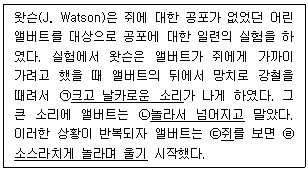
- ㉠ - 조건 자극, ㉡ - 조건 반응
- ㉠ - 무조건 자극, ㉣ - 무조건 반응
- ㉡ - 무조건 반응, ㉢ - 조건 자극
- ㉡ - 조건 반응, ㉣ - 무조건 반응
- ㉢ - 무조건 자극, ㉣ - 무조건 반응
(정답률: 알수없음)
19. 학습 연구자와 그 이론적 주장의 연결로 옳은 것은?
- 손다이크(E. Thorndike) - 행동의 결과가 자극과 반응 간 연결 강도에 영향을 준다.
- 톨만(E. Tolman) - 학습의 수준은 강화에 따라 변한다.
- 에빙하우스(H. Ebbinghaus) - 어떤 관념은 선천적이어서 개인의 과거 경험에 의존하지 않는다.
- 스키너(B. Skinner) - 정신적 경험은 학습에 포함된다.
- 반두라(A. Bandura) - 관찰학습은 조작적 조건화와 같다.
(정답률: 알수없음)
20. 이차 강화물에 해당하는 것을 모두 고른 것은?
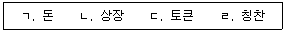
- ㄱ, ㄴ
- ㄴ, ㄷ
- ㄴ, ㄹ
- ㄱ, ㄴ, ㄷ
- ㄱ, ㄴ, ㄷ, ㄹ
(정답률: 알수없음)
21. 행동주의적 관점에서 학습의 예가 아닌 것은?
- 수영하기
- 일과표 작성하기
- 친구와 노래하기
- 긍정적으로 생각하기
- 읽은 글에 관해 설명하기
(정답률: 알수없음)
22. 다음 중 언제 강화가 주어질지 내담자가 예측하기 어려운 강화계획을 모두 고른 것은?
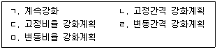
- ㄴ, ㄷ
- ㄴ, ㄹ
- ㄷ, ㅁ
- ㄹ, ㅁ
- ㄱ, ㄷ, ㅁ
(정답률: 알수없음)
23. 통찰학습에 관한 설명으로 옳지 않은 것은?
- 문제해결에서 정신적 숙고의 과정을 거친다.
- 미해결에서 해결 상태로의 이행이 갑작스럽다.
- '전체는 부분의 합 이상' 이라는 게슈탈트 심리학에 근거한다.
- 학습자는 통찰을 통한 문제해결의 원리를 구조적으로 유사한 문제에 쉽게 적용할 수 있다.
- 보상을 기대하기 보다는 경험 그 자체를 추구한다.
(정답률: 알수없음)
24. 뇌의 각 부위와 주요 기능에 관한 설명으로 옳지 않은 것은?
- 전두엽은 계획 세우기와 추론 등 고차원적 사고과정을 조절한다.
- 베르니케 영역은 언어의 의미를 이해하는 중요한 기능을 한다.
- 측두엽은 청각정보의 해석과 기억에 중요한 역할을 한다.
- 편도체는 공포 및 불안과 같은 정서 기억 형성에 중요한 역할을 하는 변연계의 한 부분이다.
- 후두엽은 온도, 압력, 질감 등 체감각에 관한 정보를 주로 처리하는 부위이다.
(정답률: 알수없음)
25. 다음 중 프리맥의 원리에 관한 설명으로 옳은 것을 모두 고른 것은?
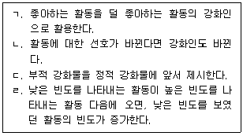
- ㄱ, ㄴ
- ㄴ, ㄷ
- ㄱ, ㄴ, ㄷ
- ㄱ, ㄴ, ㄹ
- ㄴ, ㄷ, ㄹ
(정답률: 알수없음)
2과목: 청소년 이해론
26. 알포트(G. Allport)의 특질이론에서 개인의 모든 행동 및 사고양식에 영향을 미치는 지배적인 특질은?
- 주특질
- 중심특질
- 이차적 특질
- 부차적 특질
- 소특질
(정답률: 알수없음)
27. 청소년기 신체발달에 관한 설명으로 옳지 않은 것은?
- 성장호르몬과 성호르몬의 분비가 활발해진다.
- 남자 청소년은 에스트로겐보다 안드로겐이 더 많이 분비된다.
- 에스트로겐은 여자 청소년의 유방발달에 영향을 미친다.
- 성장급등 현상이 나타난다.
- 테스토스테론은 임신이 가능하도록 자궁의 내벽을 준비하는 역할을 한다.
(정답률: 알수없음)
28. 인지발달적 관점에서 도덕성 발달을 설명한 학자는?
- 프로이드(S. Freud)
- 피아제(J. Piaget)
- 반두라(A. Bandura)
- 로저스(C. Rogers)
- 에릭슨(E. Erikson)
(정답률: 알수없음)
29. 청소년기에 나타나는 사고의 특징으로 옳지 않은 것은?
- 추상적 사고
- 가설 연역적 사고
- 사고과정에 대한 사고
- 물활론적 사고
- 이상주의적 사고
(정답률: 알수없음)
30. 마르샤(J. Marcia)의 자아정체감 이론에 관한 내용이다. 다음이 설명하는 것은?
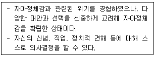
- 정체감 유실
- 정체감 유예
- 정체감 성취
- 정체감 혼미
- 정체감 탐색
(정답률: 알수없음)
31. 설리번(H. Sullivan)의 이론에 관한 설명으로 옳은 것을 모두 고른 것은?
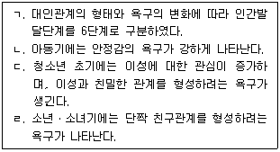
- ㄱ, ㄷ
- ㄴ, ㄹ
- ㄱ, ㄴ, ㄷ
- ㄴ, ㄷ, ㄹ
- ㄱ, ㄴ, ㄷ, ㄹ
(정답률: 알수없음)
32. 진로이론에 관한 학자와 그 내용의 연결이 옳은 것은?
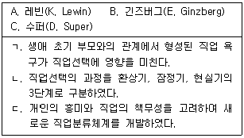
- A – ㄱ
- A – ㄷ
- B – ㄴ
- B – ㄷ
- C - ㄱ
(정답률: 알수없음)
33. 청소년기에 관한 설명으로 옳지 않은 것은?
- 아동에서 성인으로 이행하는 과도기적인 단계이다.
- 청소년과 관련된 연령은 법령에 따라 다르다.
- 최근 사회변화에 따라 청소년기가 연장되는 추세에 있다.
- 청소년기는 사춘기의 시작과 함께 시작한다.
- 성적 성숙이 이루어지지 않아 생식능력이 없다.
(정답률: 알수없음)
34. 청소년기 학업에 관한 설명으로 옳지 않은 것은?
- 학업스트레스가 높게 나타나는 경향이 있다.
- 과도한 시험불안은 청소년의 학업수행에 부정적인 영향을 미친다.
- 학습장애는 읽기, 쓰기, 셈하기 등의 기초학습영역에서 문제를 보이는 경우를 말한다.
- 학업능력에 큰 영향을 미치는 요인은 부모의 경제적 지위이다.
- 학업 성취가 낮은 청소년은 그 원인을 내부 요인보다 외부 요인으로 돌리는 경향이 있다.
(정답률: 알수없음)
35. 청소년기 또래관계에 관한 설명으로 옳지 않은 것은?
- 부모와 가족으로부터 자율성을 추구한다.
- 또래관계는 자아정체감 형성의 기회를 제공한다.
- 아동기보다 친구들과 많은 시간을 보낸다.
- 이성에 대한 관심과 흥미가 낮은 편이다.
- 아동기보다 또래집단에 대한 동조성이 높게 나타난다.
(정답률: 알수없음)
36. 길리건(C. Gilligan)의 도덕성 발달이론에 관한 설명으로 옳은 것을 모두 고른 것은?
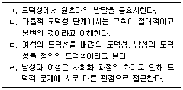
- ㄱ, ㄴ
- ㄷ, ㄹ
- ㄱ, ㄴ, ㄷ
- ㄴ, ㄷ, ㄹ
- ㄱ, ㄴ, ㄷ, ㄹ
(정답률: 알수없음)
37. 바움린드(D. Baumrind)의 자녀양육유형 중 애정과 통제가 모두 높은 것은?
- 허용적 유형
- 권위적 유형
- 독재적 유형
- 거부적 유형
- 방임적 유형
(정답률: 알수없음)
38. 청소년복지 지원법상 다음이 설명하는 것은?
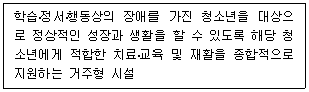
- 청소년쉼터
- 청소년자립지원관
- 청소년치료재활센터
- 청소년회복지원시설
- 청소년상담복지센터
(정답률: 알수없음)
39. 학교폭력예방 및 대책에 관한 법률상 피해학생의 보호 내용을 모두 고른 것은?
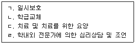
- ㄱ, ㄷ
- ㄴ, ㄹ
- ㄱ, ㄴ, ㄷ
- ㄴ, ㄷ, ㄹ
- ㄱ, ㄴ, ㄷ, ㄹ
(정답률: 알수없음)
40. 청소년복지 지원법령상 지역사회 청소년통합지원체계에 반드시 포함되어야 할 필수연계 기관을 모두 고른 것은?
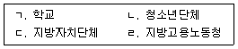
- ㄱ, ㄴ
- ㄱ, ㄴ, ㄷ
- ㄱ, ㄷ, ㄹ
- ㄴ, ㄷ, ㄹ
- ㄱ, ㄴ, ㄷ, ㄹ
(정답률: 알수없음)
41. 청소년복지 지원법령상 위기청소년 특별지원에 관한 내용으로 옳은 것을 모두 고른 것은?
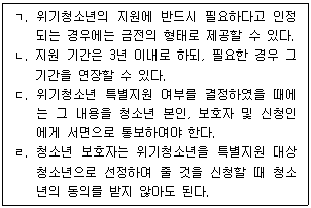
- ㄱ, ㄷ
- ㄴ, ㄹ
- ㄱ, ㄴ, ㄷ
- ㄴ, ㄷ, ㄹ
- ㄱ, ㄴ, ㄷ, ㄹ
(정답률: 알수없음)
42. 다음이 설명하는 문화이론은?
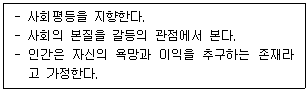
- 상대론
- 체계론
- 진화론
- 갈등론
- 구조 기능론
(정답률: 알수없음)
43. 다음이 설명하는 문화변동은?
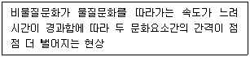
- 문화지체
- 문화이식
- 문화결핍
- 문화전계
- 문화접변
(정답률: 알수없음)
44. 청소년 보호법상 청소년 출입ㆍ고용금지업소에 해당하지 않는 것은?
- 「게임산업진흥에 관한 법률」에 따른 일반게임제공업
- 「사행행위 등 규제 및 처벌 특례법」에 따른 사행행위영업
- 「체육시설의 설치ㆍ이용에 관한 법률」에 따른 무도학원업
- 「한국마사회법」에 따른 장외발매소
- 「게임산업진흥에 관한 법률」에 따른 인터넷컴퓨터게임시설제공업
(정답률: 알수없음)
45. 학교부적응 요인에 해당하지 않는 것은?
- 낮은 학업성취도
- 부모와의 안정적 애착
- 입시위주의 교육
- 경쟁지향적인 학교 운영
- 또래관계에서의 소외감
(정답률: 알수없음)
46. 청소년비행을 설명하는 다양한 이론이 있다. 아노미이론과 관련된 학자는?
- 밀러(W. Miller)
- 서덜랜드(E. Sutherland)
- 코헨(A. Cohen)
- 허쉬(T. Hirschi)
- 뒤르껭(E. Durkheim)
(정답률: 알수없음)
47. 다음이 설명하는 청소년 참여기구는?
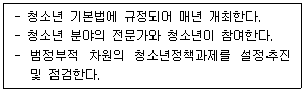
- 청소년의회
- 청소년특별회의
- 청소년참여위원회
- 청소년운영위원회
- 청소년보호위원회
(정답률: 알수없음)
48. 다음이 설명하는 여성가족부의 청소년정책 사업은?
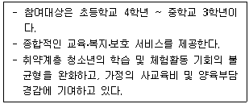
- 드림스타트
- 청소년동반자
- 청소년방과후아카데미
- 청소년 우대 사업
- 지역아동센터
(정답률: 알수없음)
49. 인터넷 중독에 영향을 주는 사회ㆍ환경적 요인을 모두 고른 것은?
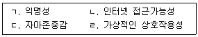
- ㄱ, ㄴ
- ㄷ, ㄹ
- ㄱ, ㄴ, ㄹ
- ㄴ, ㄷ, ㄹ
- ㄱ, ㄴ, ㄷ, ㄹ
(정답률: 알수없음)
50. 다음이 설명하는 용어는?
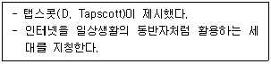
- X세대
- N세대
- M세대
- P세대
- G세대
(정답률: 알수없음)
3과목: 청소년 수련 활동론
51. 청소년 기본법상 청소년활동의 정의이다. ( )에 들어갈 내용으로 옳은 것은?
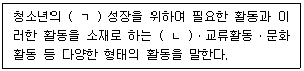
- ㄱ: 창의적인, ㄴ: 수련활동
- ㄱ: 균형있는, ㄴ: 봉사활동
- ㄱ: 창의적인, ㄴ: 봉사활동
- ㄱ: 균형있는, ㄴ: 수련활동
- ㄱ: 전인적인, ㄴ: 봉사활동
(정답률: 알수없음)
52. 청소년 프로그램개발 패러다임 중 구성주의에 관한 설명으로 옳지 않은 것은?
- 목표에 의해 내용이 결정되는 특성이 강하다.
- 해석적 성격을 가진다.
- 청소년 지도의 과정을 청소년지도자와 청소년이 함께 의미를 창출하는 상호작용으로 규정한다.
- 다양한 교육적 경험을 통한 지속적ㆍ반성적 숙고과정을 거친다.
- 전문가가 아닌 참여자 중심의 프로그램 개발을 강조한다.
(정답률: 알수없음)
53. '조하리의 창문'에서 자신의 느낌, 생각, 행동 등이 타인에게는 알려져 있으나 자신은 알지 못하는 영역은?
- 개방영역
- 맹인영역
- 은폐영역
- 미지영역
- 성찰영역
(정답률: 알수없음)
54. 청소년 프로그램 개발 및 운영 과정의 순서로 옳은 것은?
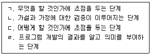
- ㄱ - ㄴ - ㄹ – ㄷ
- ㄱ - ㄷ - ㄴ – ㄹ
- ㄴ - ㄷ - ㄹ - ㄱ
- ㄷ - ㄱ - ㄴ – ㄹ
- ㄷ - ㄴ - ㄱ - ㄹ
(정답률: 알수없음)
55. 칙센트미하이(M. Csikszentmihalyi)의 몰입경험 이론에서 자신의 수행능력 수준에 미치지 못하는 활동과제를 수행할 때 경험하는 것은?
- 불안
- 걱정
- 몰입
- 각성
- 지루함
(정답률: 알수없음)
56. 과제지향적 리더십의 특성에 해당하는 것을 모두 고른 것은?
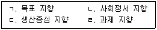
- ㄱ, ㄹ
- ㄴ, ㄷ
- ㄱ, ㄴ, ㄷ
- ㄱ, ㄷ, ㄹ
- ㄱ, ㄴ, ㄷ, ㄹ
(정답률: 알수없음)
57. 청소년 프로그램 마케팅의 4P 모델에 해당하지 않는 것은?
- 프로그램 성과
- 프로그램 장소
- 프로그램 비용
- 프로그램 내용
- 프로그램 홍보
(정답률: 알수없음)
58. 청소년 기본법상 청소년상담사를 배치하지 않아도 되는 기관은?
- 특별시ㆍ광역시ㆍ도 및 특별자치도에 설치된 청소년상담복지센터
- 청소년치료재활센터
- 시ㆍ군ㆍ구에 설치된 청소년상담복지센터
- 청소년쉼터
- 청소년문화의집
(정답률: 알수없음)
59. 청소년활동 진흥법상 수련시설의 종합평가에 관한 설명으로 옳은 것을 모두 고른 것은?
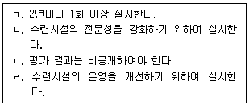
- ㄱ, ㄴ
- ㄴ, ㄷ
- ㄷ, ㄹ
- ㄱ, ㄴ, ㄹ
- ㄱ, ㄷ, ㄹ
(정답률: 알수없음)
60. 청소년활동프로그램 기획단계의 순서로 옳은 것은?
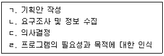
- ㄱ - ㄴ - ㄷ – ㄹ
- ㄴ - ㄱ - ㄷ – ㄹ
- ㄴ - ㄷ - ㄹ - ㄱ
- ㄹ - ㄱ - ㄴ – ㄷ
- ㄹ - ㄴ - ㄱ - ㄷ
(정답률: 알수없음)
61. 다음이 설명하는 청소년지도방법은?
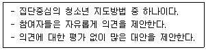
- 필립 66
- 도제제도
- 역할연기
- 브레인스토밍
- 게임 및 시뮬레이션
(정답률: 알수없음)
62. 관할구역의 위기청소년을 조기에 발견하여 보호하고, 청소년보호를 효율적으로 수행하기 위한 지역사회 청소년통합지원체계를 구축ㆍ운영하여야 하는 자는?
- 교육감
- 교육장
- 지방자치단체장
- 한국청소년단체협의회장
- 한국청소년활동진흥원이사장
(정답률: 알수없음)
63. 청소년활동 진흥법령상 청소년수련시설의 이용범위에 관한 내용이다. ( )에 들어갈 내용으로 옳은 것은?
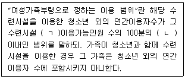
- ㄱ: 월간, ㄴ: 30
- ㄱ: 연간, ㄴ: 40
- ㄱ: 주간, ㄴ: 50
- ㄱ: 연간, ㄴ: 60
- ㄱ: 월간, ㄴ: 70
(정답률: 알수없음)
64. 청소년자기도전포상제의 금장 활동영역으로 옳지 않은 것은?
- 합숙활동
- 신체단련활동
- 자기개발활동
- 봉사활동
- 탐험활동
(정답률: 알수없음)
65. 청소년활동 진흥법상 청소년수련시설에 해당하는 것은?
- 청소년쉼터
- 유스호스텔
- 청소년자립지원관
- 청소년회복지원시설
- 청소년상담복지센터
(정답률: 알수없음)
66. 청소년수련활동 인증제 운영절차로 옳은 것은?
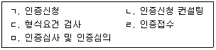
- ㄱ - ㄴ - ㄷ - ㄹ – ㅁ
- ㄱ - ㄷ - ㄴ - ㅁ – ㄹ
- ㄱ - ㄷ - ㄹ - ㄴ - ㅁ
- ㄴ - ㄱ - ㄷ - ㄹ – ㅁ
- ㄴ - ㄷ - ㄱ - ㅁ - ㄹ
(정답률: 알수없음)
67. 청소년 체험활동의 계획단계에 해당하지 않는 것은?
- 활동계획 협의
- 목표의 상세화
- 주의사항 숙지
- 학습방법의 구체화
- 현장답사 및 사전교육
(정답률: 알수없음)
68. 청소년 동아리활동의 일반적인 특성이 아닌 것은?
- 자치활동
- 집단활동
- 경쟁활동
- 여가활동
- 자율활동
(정답률: 알수없음)
69. 청소년활동 진흥법령상 위험도가 높아 인증을 받아야 하는 수련활동이 아닌 것은?
- 5 km 걷기활동
- 산악스키
- 패러글라이딩
- 래프팅
- 암벽타기
(정답률: 알수없음)
70. 청소년 자원봉사활동의 특성으로 옳지 않은 것은?
- 이타성
- 지속성
- 공동체성
- 자발성
- 영리성
(정답률: 알수없음)
71. 청소년활동 진흥법령상 청소년수련시설 안전기준에 관한 내용으로 옳지 않은 것은?
- 비상연락장치를 유지하여야 한다.
- 시설물에 대한 안전점검을 매년 2회 실시하여야 한다.
- 수련시설의 종사자에 대하여 정기적으로 안전교육을 실시하여야 한다.
- 부상자ㆍ병자에 대하여 응급처치를 할 수 있는 구호설비ㆍ기구를 갖추어야 한다.
- 안전사고ㆍ응급환자 발생 등에 대비하여 긴급 후송대책 등의 방안을 마련하여야 한다.
(정답률: 알수없음)
72. 청소년활동 진흥법령상 안전교육에 관한 내용으로 옳지 않은 것은?
- 안전교육은 매년 1회 이상 실시한다.
- 수련시설의 안전점검 및 위생관리에 관해 교육한다.
- 청소년수련활동 안전사고 예방 및 관리에 관해 교육한다.
- 청소년수련활동 및 수련시설의 안전관련 법령에 관해 교육한다.
- 이러닝 수강 후 집합교육을 이수하는 것을 원칙으로 한다.
(정답률: 알수없음)
73. 청소년 기본법령상 청소년참여위원회(이하 '참여위원회'라 한다.)에 관한 내용으로 옳지 않은 것은?
- 참여위원회의 위원은 성별ㆍ연령ㆍ지역 등을 고려하여 구성하여야 한다.
- 참여위원회는 효율적인 정책 제안 등을 위하여 필요한 경우에는 분과위원회를 둘 수 있다.
- 참여위원회의 위원장은 위원 중에서 한국청소년활동진흥원 이사장이 임명한다.
- 참여위원회는 청소년 관련 정책에 관한 의견 제안을 위하여 설문조사, 토론회 등을 통하여 여론을 수렴할 수 있다.
- 국가 및 지방자치단체는 참여위원회가 청소년 관련 정책에 관하여 자문할 수 있도록 자문단을 둘 수 있다.
(정답률: 알수없음)
74. 청소년수련활동 인증기준 중 특별기준에 해당하는 것을 모두 고른 것은?
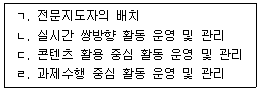
- ㄱ, ㄹ
- ㄴ, ㄷ
- ㄱ, ㄴ, ㄷ
- ㄴ, ㄷ, ㄹ
- ㄱ, ㄴ, ㄷ, ㄹ
(정답률: 알수없음)
75. 청소년활동 진흥법상 청소년수련활동 신고제도에서 신고수리 주체는?
- 청소년수련활동을 주최하려는 청소년수련시설
- 법률에 따른 비영리 법인이 아닌 주식회사
- 특별자치시장ㆍ특별자치도지사ㆍ시장ㆍ군수ㆍ구청장
- 청소년활동 진흥법의 지도ㆍ감독을 받는 기관
- 한국청소년활동진흥원
(정답률: 알수없음)